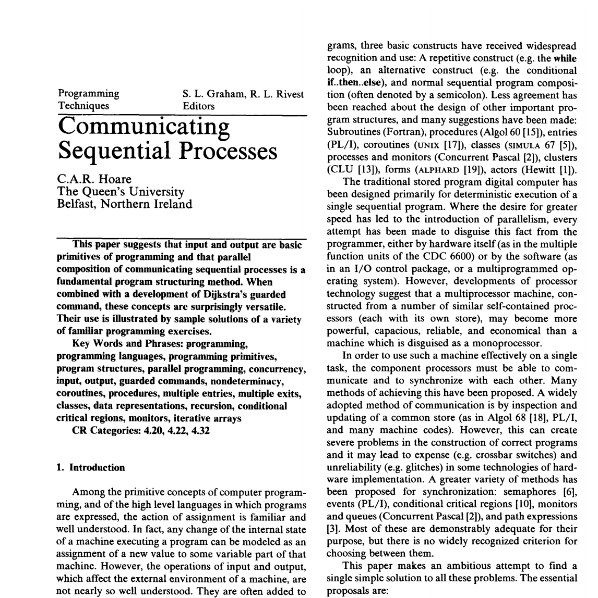
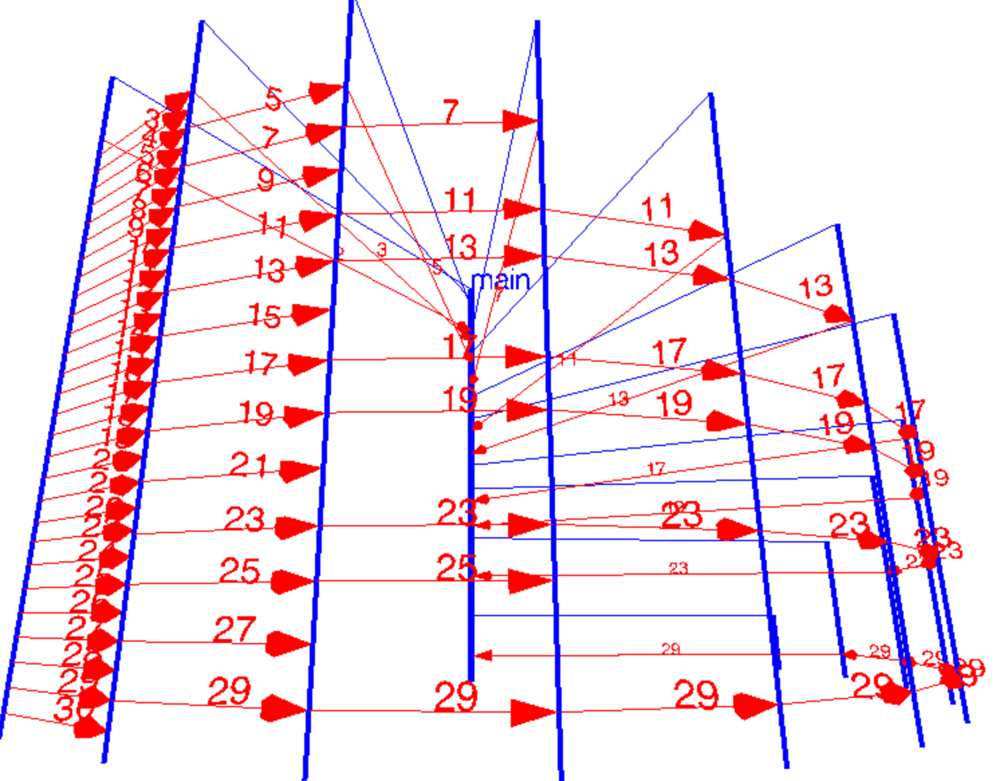
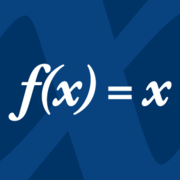

Tony Hoare’s
CSP
The Old School
Version
@rtoal

Thank you, Sir Tony, for
- Quicksort
- Axiomatic Semantics (Hoare Logic)
- Monitors
- Communicating Sequential Processes
- The Billion Dollar Mistake
“Developments of processor technology suggest that a multiprocessor machine, constructed from a number of similar, self-contined processors (each with its own store), may become more powerful, capacious, reliable, and economical than a machine which is disguised as a monoprocessor.”
When did he say that?
1978
Why did he write this paper?
There’s an issue with shared, mutable state.
Let’s see, what was that again...?
RACES!
- Hardware solutions? Expensive (well it used to be)
- Software solutions? Semaphores, Mutexes, Atomic Operations, Monitors, Barriers, Countdowns, OH MY!
Hoare’s Seven Proposals
- Parallel command launches procs simultaneously and finishes when all the procs finish
- Simple input and output commands
- Unbuffered and synchronous on both sides
- Guards for nondeterminism
- Input commands in guards
- Input commands in loops
- Pattern matching to discriminate incoming messages
[cardreader?card || lineprinter!line] [west::DISSASEMBLE || X::SQUASH || east::ASSEMBLE] [ room::ROOM || fork(i:0..4)::FORK || phil(i:0..4)::PHIL ] X :: *[c:character; west?c -> east!c]
CSP the “language”
- Not intended to be a full language
- Explicit naming of processes on both ends, rather than channels
- Rejection of asychronous buffers
- Very static...Names and sizes of processor arrays specified in advance
- Later, CSP became a process algebra
Syntax
CmdList ::= (Decl ';' | Cmd ';')* Cmd
Cmd ::= 'skip' | Assn | In | Out | Alt | Loop | Parallel
Parallel ::= '[' Proc # '||' ']'
Proc ::= Label? CmdList
Label ::= id (Sub # ',')? '::'
Sub ::= Primary | Range
Primary ::= num | id
Range ::= id ':' Primary '..' Primary
Assn ::= Var ':=' Exp
Exp ::= num | str | id | id? '(' (Exp # ',')? ')'
Var ::= id | id? '(' (Var # ',')? ')'
In ::= Name '?' Var
Out ::= Name '!' Exp
Name ::= Id ('(' Exp_int # ',' ')')?
Loop ::= '*' Alt
Alt ::= '[' GCmd # '▯' ']'
GCmd ::= (Range # ',')? Guard '->' CmdList
Guard ::= GList | In | GList ';' In
GList ::= (Exp_bool | Decl) # ';'
Terms
17
"string"
n
person("alice",age)
employee("bob",home("pasadena","ca","usa"))
P()
(x, y)
cons(a,100)
line[80]
Expressions
- Unspecified, come from some kind of host language apparently
- But of course we want
+,*=,>,≤, etc. - Same for types, we should have at least
int,bool,string
Assignments Matching
n := n * 2 + 1
p := person(name, age)
person(name, age) := q
person(name, age) := person("alice", 29)
c := P()
P() := c
e := player(class(3), loc(88,173))
(x,y) := (y,x)
To match, must have same structure and same type. Assignment fails if no match.
Input and Output
DIV ! (3*a+b, 13)
|
X ? (x,y)
|
console(j-1) ! "A"
|
console(i) ? c
|
sem ! P()
|
X(i) ? V()
|
Guarded Commands
Not a top-level command!
i ≤ 80 -> X!cardimage[i]
|
(i:0..4)phil(i)?enter() -> diners := diners + 1
|
(x < 5; c := 10; true; y > c -> x := x + 1
|
Evaluate guard elements left-to-right
false is fail
Alternatives (Choices)
[ x ≥ y -> m := x ▯ y ≥ x -> m := y ]
|
[ c ≠ "*" -> east!c ▯ c = "*" -> west?c ]
|
[ i < 124 -> i := i+1
|
If all guards fail, the whole command fails
Repetitives (Loops)
*[i ≤ 80 -> X!card]
|
*[X?V() -> val := val+1
|
|
If all guards fail, the loop exits cleanly
Parallel Composition
[a::A || b::B || c::C || d::D]
|
[a(1..3)::printer!i*i]
|
[a(1)::printer!1 || a(2)::printer!4 || a(3)::printer!9 ]
|
It succeeds iff all sub-commands succeed
Example: Division (slow)
[ DIV :: *[x,y: integer, X?(x,y) ->
quot, rem: integer; quot := 0; rem := x;
*[ rem ≥ y -> rem := rem - y; quot := quot + 1 ];
X!(quot, rem)
]
||
X :: USER
]
Example: Factorial
[ fac(i:1..limit) ::
*[n: integer, fac(i-1)?n ->
[ n = 0 -> fac(i-1)!1
▯ n > 0 -> fac(i+1)!n-1;
r:integer; fac(i+1)?r;
fac(i-1)!(n*r)
]
]
||
fac(0) :: USER
]
Example: Buffer (as a Process)
Q ::
buffer: [0..9]object;
in, out: integer; in := 0; out := 0;
*[ in < out+10; producer?buffer[in mod 10] ->
in := in+1
▯ out < in; consumer?more() ->
consumer!buffer[out mod 10];
out := out + 1
]
Q!objconsumer invokes
Q!more(); Q?objExample: Dining Philosophers
[room::ROOM || fork(i:0..4)::FORK || phil(i:0..4)::PHIL]
where ROOM =
diners: integer; diners := 0;
*[ (i:0..4)phil(i)?enter() -> diners := diners + 1
▯ (i:0..4)phil(i)?exit() -> diners := diners - 1
]
and FORK =
*[ phil(i)?pickup() -> phil(i)?putdown()
▯ phil(i-1 mod 5)?pickup() -> phil(i-1 mod 5)?putdown()
]
and PHIL =
*[ THINK;
room?enter();
fork(i)!pickup(); fork(i+1 mod 5)!pickup();
EAT;
fork(i)!putdown(); fork(i+1 mod 5)!putdown();
room!exit()
]
Hoare’s Suggestion
Concurrency and communication should be regarded as primitives of programming (not unlike assignment, sequencing, choice, repetition, and functional abstraction).
So...Who uses this stuff today?
Well, sort of...
- The sender names the receiver but not vice-versa
- All communication is asynchronous
- To make it synchronous, pass your process id to the receiver then wait on a response
Warning: Hacky, Inefficient Example
Just to show a wee bit of Erlangmain(_) ->
Max = 1000,
Printer = spawn(printer, print_server, [self()]),
lists:foreach(
fun (N) ->
spawn(prime_checker, is_prime, [N, Printer])
end,
lists:seq(2, Max)),
wait(Max-1).
wait(0) -> io:format("~n");
wait(N) -> receive _ -> wait(N-1) end.
Inificiently checking primes here...
Perhaps a good example tho
-module(prime_checker).
-export([is_prime/2]).
is_prime(N, Observer) ->
(fun Check(D) ->
if
D * D > N -> % No more divisors
Observer ! N;
N rem D == 0 -> % Composite
Observer ! false;
true -> % Keep looking
Check(D+1)
end
end)(2).
A super generic integer printer
Yep, I’m a server!-module(printer).
-export([print_server/1]).
print_server(Observer) ->
receive
N when is_integer(N) ->
io:format("~p ", [N]),
Observer ! true;
_ ->
Observer ! false
end,
print_server(Observer).
Who else?
But with channels, not named processes
Channels are synchronous (by default)
package main
import "fmt"
func Example() {
ch := make(chan string)
go func() {ch <- "Hello, world"}()
fmt.Println(<-ch)
// Output: Hello, world
}
You can have a buffered channel, too
func generateMessages(ch chan string, n int) {
for i := 0; i < n; i++ {
ch <- "Hello"
}
close(ch)
}
func main() {
messages := make(chan string, 5)
go generateMessages(messages, 100)
for message := range messages {
fmt.Println(message)
}
}
Concurrent Sieve! (by Rob Pike, I think)
func generate(first chan<- int) {
for i := 2; ; i++ {
first <- i
}
}
func filter(in <-chan int, out chan<- int, prime int) {
for {
candidate := <-in
if candidate % prime != 0 {
out <- candidate
}
}
}
func main() {
ch := make(chan int)
go generate(ch)
for i := 0; i < 1000; i++ {
prime := <-ch
fmt.Println(prime)
nextCh := make(chan int)
go filter(ch, nextCh, prime)
ch = nextCh
}
}
http://divan.github.io/posts/go_concurrency_visualize/
CSP in Go
https://github.com/thomas11/csp
“Implementing these examples, and the careful reading of the paper required to do so, were a very enlightening experience. I found the iterative array of 4.2, the concurrent routines changing their behavior execution of 4.5, and the highly concurrent matrix multiplication of 6.2 to be particularly interesting.”
Wrap Up
- Originally a language, later a process algebra
- No shared memory, just message passing
- Synchronous, unbuffered, named sender and receiver
- Influence on Erlang, Go, many other languages
- You should check out the Go visualizations and CSP in Go
- Start thinking concurrently. And reread the paper.
Thanks to
and

and @cateches